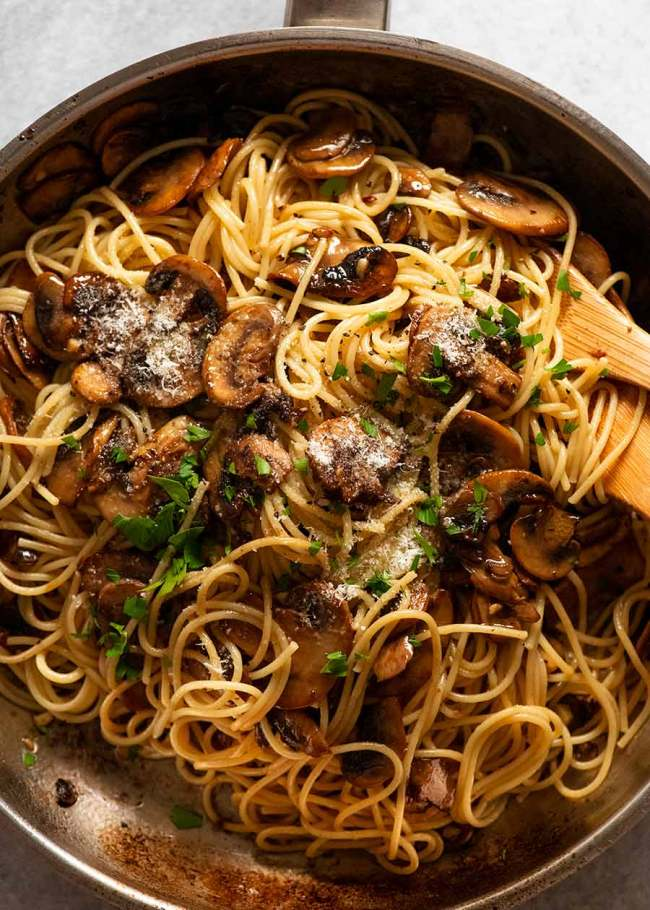

Mushroom Pasta

Description
A wholesome and simple pasta
For those carby cravings. An astonishingly simple pasta with 4 basic ingredients, perfect for a lazy cook day.
Ingredients
- Pasta (any type) 500g
- Mushrooms 250g
- Garlic 2 cloves
- Butter 2tbsp
- Salt and pepper to taste
Steps
- In a pot bring water to a rolling boil, add salt and pasta.
- Cook the pasta until al dente, usually takes around 7-8 minutes.
- Drain the pasta, reserve 3tbsp of pasta water, and keep pasta aside.
- Sautee the garlic and mushrooms in butter, season with salt and add pasta water to make a sauce.
- Toss the pasta in the mushroom sauce, garnish with any available herbs.
- Place stir-fry on tortilla, assemble into a wrap and serve hot.